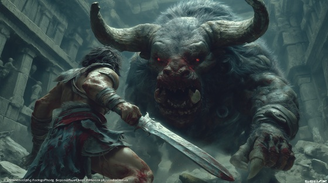

At the center of the Labyrinth, Theseus faced the Minotaur:
a savage creature born from a king's betrayal and a god's curse.
With no gods to help him, Theseus fought the monster alone — mortal blood against immortal horror.
"The Beast Within the Stone" captures the brutal, primal clash of fate and fury in the dark heart of the maze.
The Beast Within the Stone
Breath of death, horn and hide
The monster stirs where heroes die
Claws on stone, eyes of flame—
A beast no god would dare to name
No voice of man, no soul of king—
Only the hunger death will bring
The beast within the stone shall fall
I stand alone, I hear the call
No throne, no thread, no god, no plea—
The beast shall die or slaughter me
It charges blind through smoke and cries
Its breath a storm, its roar the skies
I raise my blade, I brace my will—
One breath, one cut, one grave to fill
No tear shall stain, no king shall save—
This fight shall carve the hero’s grave
The beast within the stone shall fall
I stand alone, I hear the call
No throne, no thread, no god, no plea—
The beast shall die or slaughter me
Its horn scrapes bone, its claw rends steel
But mortal blood and fire heal
I strike, I roar, I bleed, I tear—
Until the maze forgets the fear
Break the bone, spill the cry
Tear the beast beneath the sky
No crown, no soul, no law, no plea—
Only the death between you and me
The beast within the stone shall fall
I drink the storm, I break the thrall
The gods may weep, the kings may flee—
The beast shall fall by hand and blade and me
Stone to stone, blood to bone—
The hero stands, the beast alone